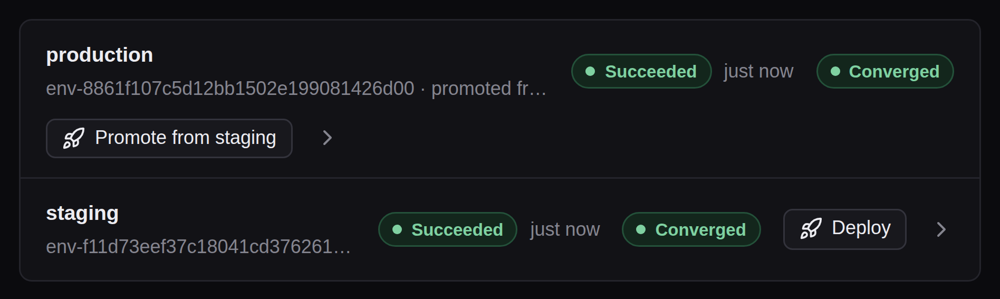

Every agent gets its own preview. Production gets only what you promote.
piqueld — open-source deployment for one Linux server
SYNOPSIS
curl -fsSL https://piqueld.dev/install.sh | shFor x86_64 Linux with systemd, git, ssh, and a Docker Engine dedicated to piqueld. The script asks before it changes anything. Read the script, or install on NixOS or by hand.
DESCRIPTION
piqueld is a daemon for one Linux server. It builds your applications from a manifest in their repository, runs them as Docker Swarm services and serves them over HTTPS. You drive it from its dashboard, from piquelctl(1), or from its HTTP API. It is open source, under the Apache License 2.0.
ENVIRONMENTS
- previews
- A branch, or a coding agent’s worktree with its uncommitted files. Private on your Tailscale tailnet by default, or public.
- staging
- Every push to main, built on the server.
- production
- Only the release you promote from staging, with the same images, never rebuilt.
Give a coding agent an API token limited to previews:deploy and previews:delete. It can create, deploy and delete previews. It can’t deploy, promote or stop staging or production.
FILES
infra/piqueld.toml
The application’s manifest, in its repository. An excerpt of one that declares staging and production:
# … [metadata] name = "blog" [spec.environments.staging] sync = true visibility = "private" # … [spec.environments.production] promote_from = "staging" # … [[spec.services]] name = "web" # … [spec.services.source.build] type = "docker" dockerfile = "Dockerfile" # …
The manifest reference describes every setting.
/etc/piqueld/config.toml
The daemon’s configuration.
EXAMPLES
A coding agent deploys its worktree, before it pushes:
You push to main, and staging follows:
You promote what staging runs:
The same application, in the dashboard:

FEATURES
- networking
- Let’s Encrypt certificates, DNS records in Cloudflare or OVH, private routes on your tailnet, Cloudflare Tunnel.
- access
- Passkey accounts, scoped API tokens, a tamper-evident audit trail, encrypted secrets.
- operations
- Volumes, one-shot jobs, logs, notifications, OpenTelemetry export.
CAVEATS
piqueld manages a single host. Clusters of several machines, arbitrary TCP or UDP ports, and registry credentials are not supported yet. Private previews and staging need a Tailscale tailnet; both can be public instead. Before 1.0, a minor release may need changes to your configuration.